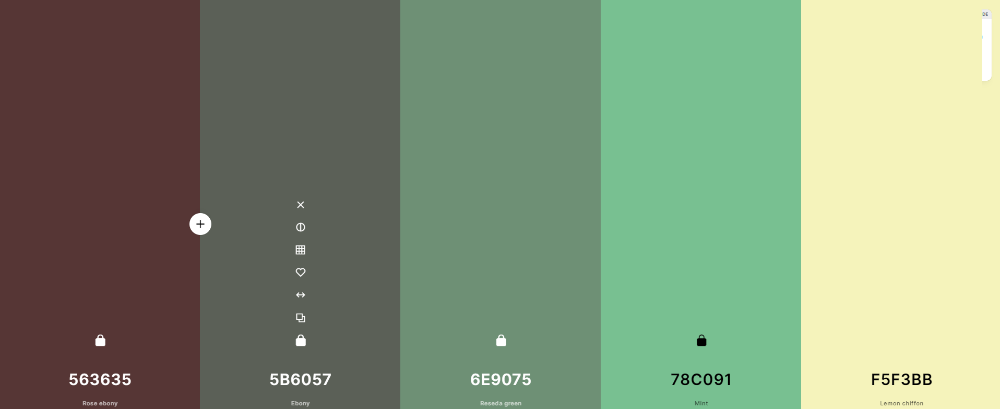

Chamber Site Plan
Site Name
Effort Chamber of Commerce
The site will be named after the Effort Pennsylvania chamber of commerce. It is straight forward, and tells the user the general idea of what this site is going to cover (Which is, all information surrounding the chamber of Commerce for Effort, PA)
Site Purpose
Having a website page for the chamber of commerce gives more local businesses a chance to get involved. It can be a one stop shop for meeting dates, Contact Info, or membership information. It also allows the user to have less hassle when finding any information about the Chamber of Commerce, due to the fact that they can access this information from anywhere with an internet connection at any time. This way , the user doesn't need to work into their schedule time to learn about the chamber of Commerce.
Scenarios
- What are the differences between the different levels of membership?
- What companies are already apart of this Chamber of Commerce?
- What events are held, where are they, when are they and what are they about? Why should I go?
Color Schema
background: 5B6057, Accent: F5F3BB
Typography
Main Font: Roboto Condensed
Title Font: playFair